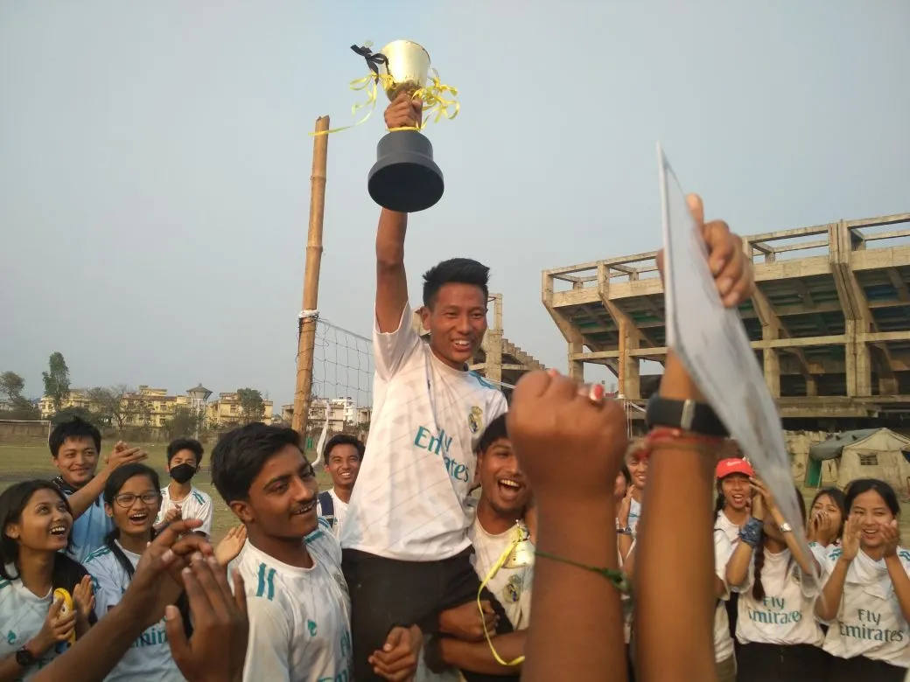
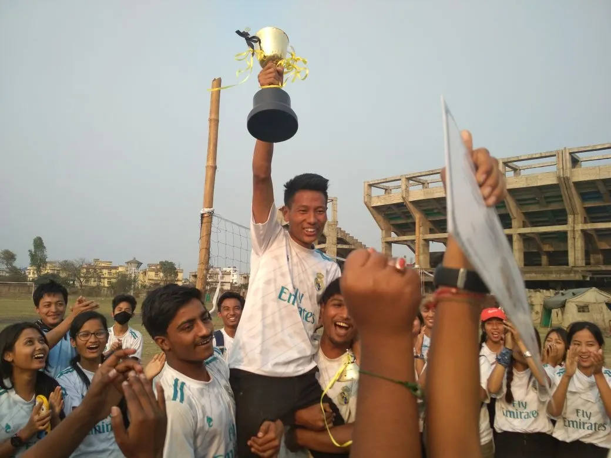
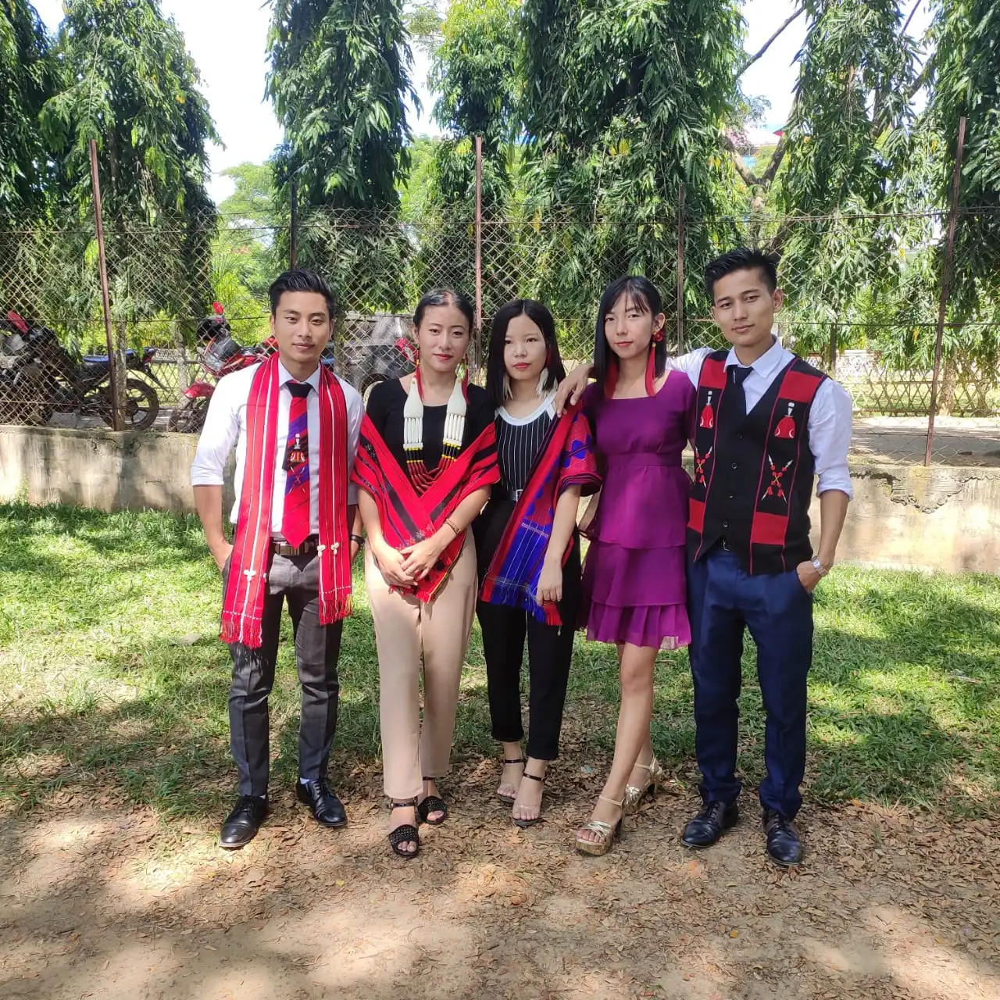
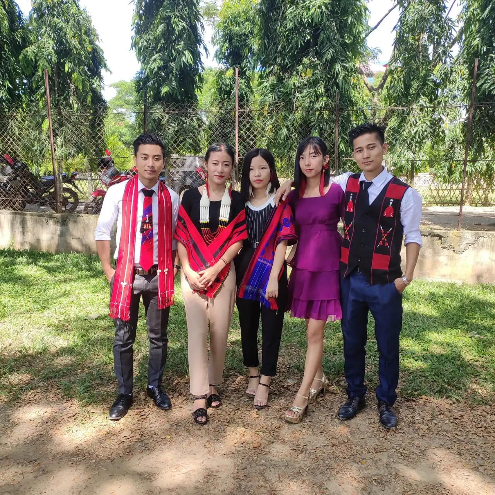
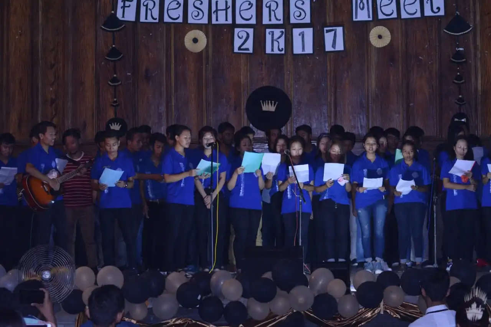
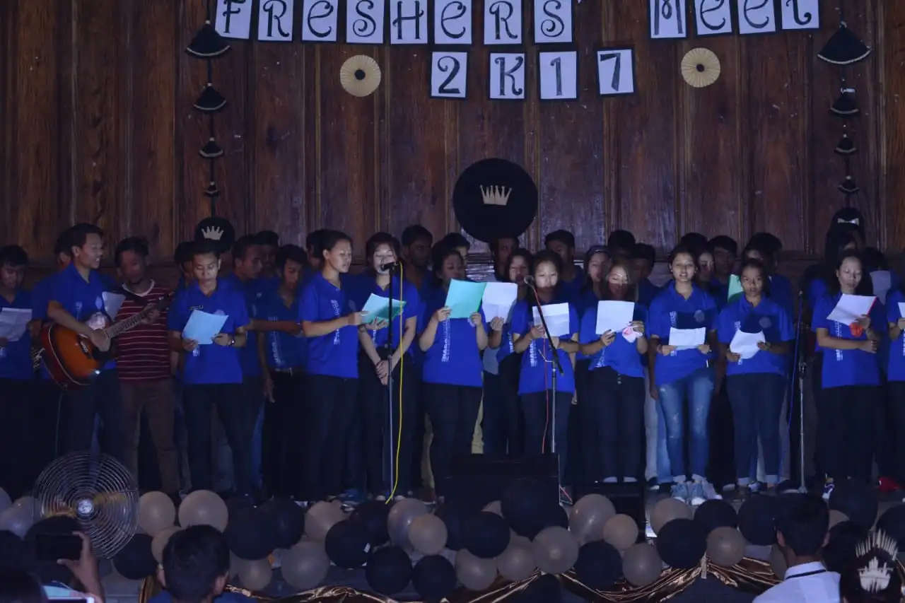

SPORTS WEEK
The SET students observe a week dedicated to sports which includes various indoor games like table tennis, chess, badminton, carrom board and outdoor games like cricket, football, volleyball, high jump, long jump. It happens mostly in the month of March.
 


CULTURAL DAY
Cultural day is observed every year to celebrate the culture and cultural diversity among the students. Various competitions are also staged on that day including file handling of students’ union.
 

FRESHERS' DAY
Freshers’ Day welcomes the new members in the School Of Engineering and Technology family. It is held for the new entries of first year and lateral entries.
 


FAREWELL
On this day the final year students are given a farewell. The juniors and entire administration wishes them a better future and bids them a happy farewell.